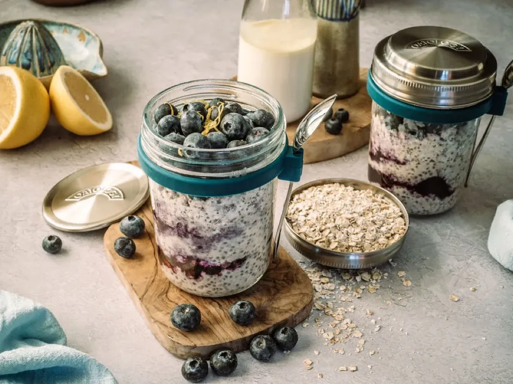
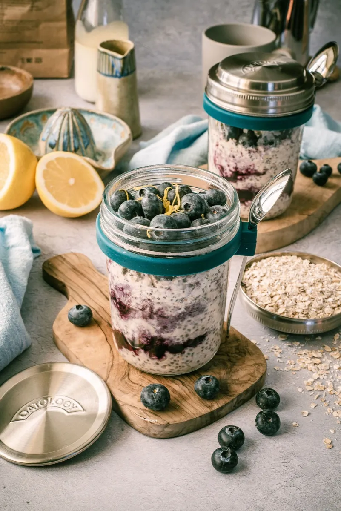
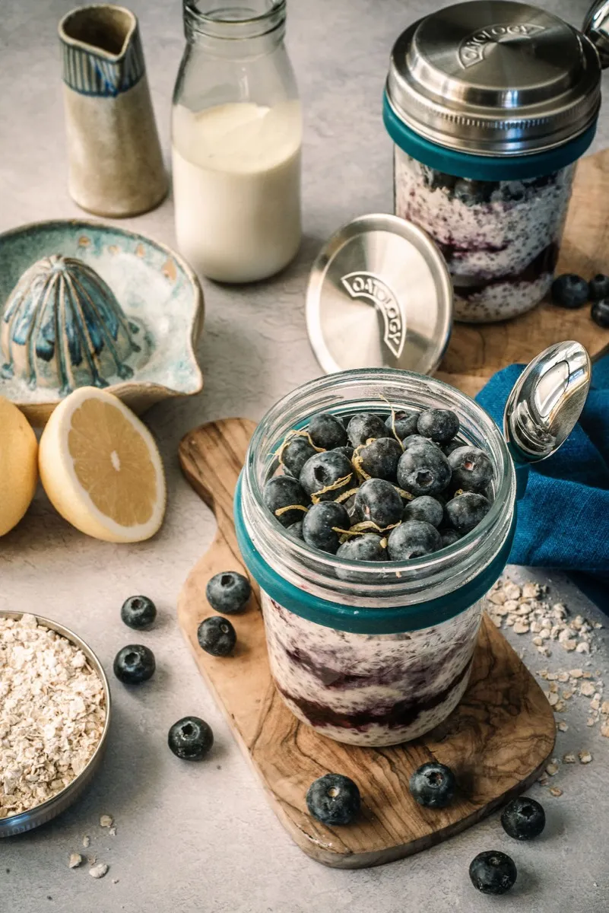

Blueberry & Lemon Overnight Oats
Blueberry and lemon overnight oats take about 10 minutes to prepare: stir 50g rolled oats, 150ml milk, 1 tbsp chia seeds, 1 tbsp Greek yoghurt, honey to taste, ½ tsp vanilla, 1 tsp lemon zest, a pinch of salt, and a handful of blueberries in a jar, then refrigerate overnight. By morning they are creamy, zesty, and bright, ready to eat cold. One jar comes to roughly 440 calories, with about 14g of protein and 10g of fibre.
It is the jar we reach for when the mornings need waking up: zesty, fresh, and wake-up bright, with the lemon zest doing most of the work. 10 minutes of stirring tonight, and a sharp, sunny breakfast is waiting in the fridge.

The recipe
Ingredients
- 50g / generous ½ cup rolled oats (one lid)
- 150ml / scant ⅔ cup milk of choice (to the milk line)
- 1 tbsp chia seeds
- 1 tbsp Greek yoghurt
- 1 to 2 tbsp honey or maple syrup, to taste
- ½ tsp vanilla extract
- 1 tsp lemon zest
- A pinch of salt
- A handful of fresh or frozen blueberries
Method
- Add 150ml milk to the milk line on your jar.
- Measure and add one portion of oats (50g) using the lid.
- Add the remaining ingredients to your jar, reserving a few blueberries for topping.
- Stir well until fully combined.
- Cover and refrigerate overnight.
- Top with the reserved blueberries and a little extra lemon zest before serving.
Tips and variations
- More protein: stir in an extra spoonful of Greek yoghurt, or a small scoop of unflavoured protein powder with a splash more milk.
- Frozen blueberries: stir them in straight from the freezer. They thaw overnight and tint the oats a gentle purple.
- Dairy-free version: swap the Greek yoghurt for a plant yoghurt and the honey for maple syrup. Same method, same overnight set.
The jar we make it in
Every recipe on this site is written around the OATOLOGY jar: the lid measures the oats, the milk line measures the milk, and the sealed lid means it travels without leaking. No scales, no guesswork. Your own jar works too, anything sealable with room for a good stir.
Get the OATOLOGY jar on Amazon 2-pack, amazon.co.uk Weighing up options? Our honest guide to overnight oats jarsYour questions, answered
How long do blueberry and lemon overnight oats last in the fridge?
Blueberry and lemon overnight oats last up to 3 days in a sealed jar in the fridge, kept at 5°C or below (the Food Standards Agency's recommended fridge temperature). Blueberries hold their shape well, so they can chill in the jar from the start. Add the reserved blueberries and extra zest fresh each morning.
Can you make blueberry and lemon overnight oats with frozen blueberries?
Yes, frozen blueberries work well in blueberry and lemon overnight oats: stir them in still frozen and they thaw in the fridge overnight while the oats set, releasing their juice and tinting everything a gentle purple. No need to defrost first. Frozen berries also make this a year-round jar rather than a summer one.
Can you make blueberry and lemon overnight oats dairy-free or vegan?
Blueberry and lemon overnight oats are not vegan as written, because of the Greek yoghurt and honey, but the swaps are simple. Use any plant yoghurt in place of the Greek, swap the honey for 1 to 2 tbsp maple syrup, and pick a plant milk. The 150ml and the overnight set stay the same.
Should you use lemon zest or lemon juice in overnight oats?
Blueberry and lemon overnight oats use zest, not juice, and the difference matters. The 1 tsp of zest carries the bright lemon oils without adding acid, so the milk and yoghurt stay smooth. A squeeze of juice can curdle dairy and thin the set. Add juice on top in the morning if you want it sharper.
Are blueberry and lemon overnight oats good for you?
Blueberry and lemon overnight oats are a balanced breakfast rather than a health product: roughly 440 calories with about 14g of protein and 10g of fibre, made with semi-skimmed milk. The oats and chia bring the fibre, the yoghurt and milk the protein, and the blueberries a little vitamin C. Numbers shift with your milk and honey.
A closer look

